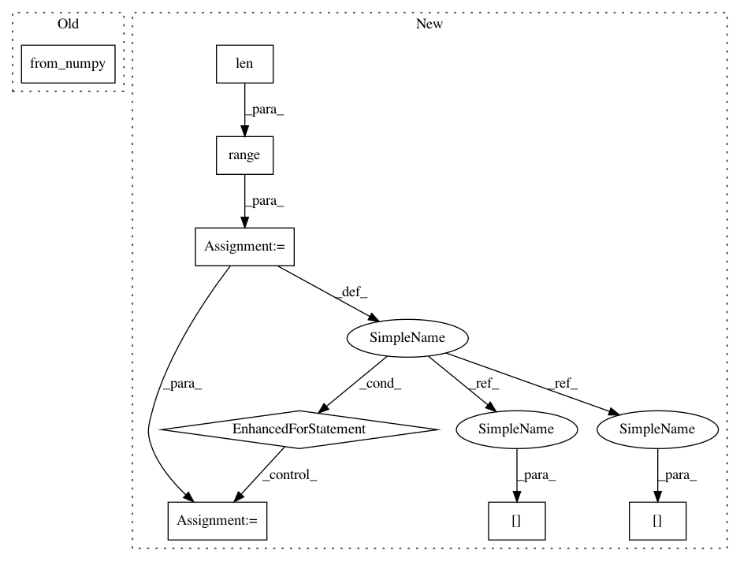

a9b58d07768ec06f8718ec2777f2b0293359f5b4,geomstats/learning/frechet_mean.py,,_ball_gradient_descent,#Any#Any#Any#Any#Any#Any#,177
Before Change
//lr * grad_tangent.sum(0, keepdims=True))
cc_barycenter = exp(torch.from_numpy(barycenter),
torch.from_numpy(lr * grad_tangent.sum(0, keepdims=True)))
cc_barycenter = cc_barycenter.data.numpy()
convergence = metric.dist(cc_barycenter, barycenter).max().item()
After Change
lr_grad_tangent_s = lr_grad_tangent.squeeze()
cc_barycenter = gs.zeros(lr_grad_tangent_s.shape)
for i in range(len(cc_barycenter)):
cc_barycenter[i] = metric.exp(barycenter_gs[i], lr_grad_tangent_s[i])
cc_barycenter = gs.expand_dims(cc_barycenter, 0)
convergence = metric.dist(cc_barycenter, barycenter).max().item()
print("conv", convergence)
In pattern: SUPERPATTERN
Frequency: 3
Non-data size: 8
Instances
Project Name: geomstats/geomstats
Commit Name: a9b58d07768ec06f8718ec2777f2b0293359f5b4
Time: 2020-04-09
Author: hadizaatiti@gmail.com
File Name: geomstats/learning/frechet_mean.py
Class Name:
Method Name: _ball_gradient_descent
Project Name: kevinzakka/recurrent-visual-attention
Commit Name: 520e8fb57b890a7249334d9e90c9ad209d0b849f
Time: 2018-02-10
Author: kevinarmandzakka@gmail.com
File Name: modules.py
Class Name: retina
Method Name: foveate
Project Name: geomstats/geomstats
Commit Name: a9b58d07768ec06f8718ec2777f2b0293359f5b4
Time: 2020-04-09
Author: hadizaatiti@gmail.com
File Name: geomstats/learning/frechet_mean.py
Class Name:
Method Name: _ball_gradient_descent
Project Name: geomstats/geomstats
Commit Name: be291b6a6ab8a663beac72fefa213bc7216a1617
Time: 2020-04-07
Author: hadizaatiti@gmail.com
File Name: geomstats/learning/frechet_mean.py
Class Name:
Method Name: _ball_gradient_descent